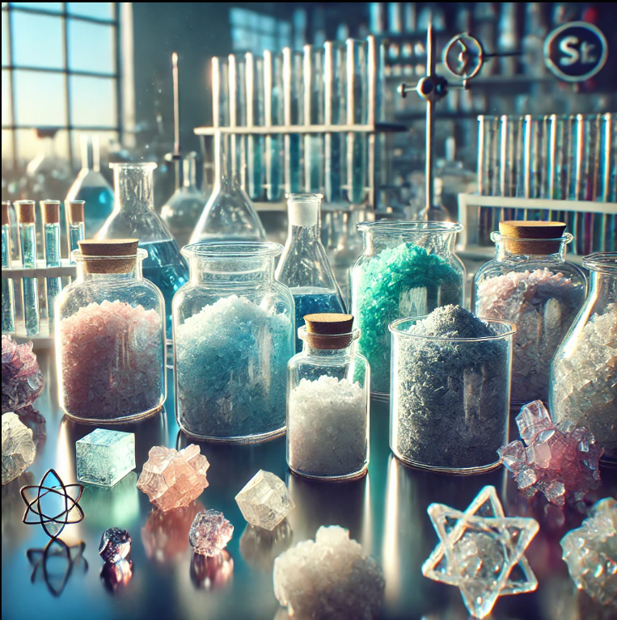
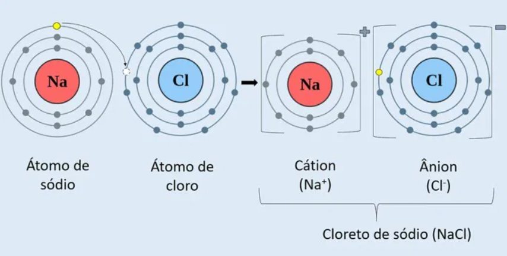

Os sais são compostos de natureza iônica, sendo então formados por um cátion e um ânion, mantidos por uma forte atração eletrostática. A principal forma de obtenção de um sal é por meio de uma reação de neutralização.
Como característica principal, os sais apresentam alto ponto de fusão e ebulição. Podem, ainda, apresentar diversas cores, serem de natureza orgânica ou inorgânica, além de conduzirem corrente elétrica quando dissolvidos ou fundidos.
Os sais podem ser de natureza ácida ou básica, e têm nomenclatura oficial estabelecida pela Iupac. Podem ser aplicados em diversos campos da sociedade, como na culinária, na medicina e na farmácia, além de serem usados na agricultura e na confecção de cosméticos e produtos de limpeza.

Características dos Sais
Importante observar que, em solução aquosa, os ácidos liberam sempre cátion H+ e as bases liberam o ânion OH- (conceito de Arrhenius).
Os sais, porém, não possuem sempre o mesmo cátion ou ânion e, por esse motivo, não revelam propriedades funcionais bem definidas. Entretanto, podemos dizer que no geral:
São compostos iônicos (formados por aglomerados de íons e não por moléculas);
Muitos apresentam sabor salgado característico (quase sempre venenosos);
São sólidos e cristalinos;
Conduzem corrente elétrica em solução;
Sofrem fusão e ebulição em altas temperaturas;
Solúveis em água (exceções: alguns sulfetos; os cloretos, brometos e iodetos com os cátions Ag+, Hg22+ e Pb2+, entre outros).
Exemplos De Sais:
Cloreto de sódio (NaCl): Também conhecido como sal de cozinha, é o sal mais popular e é utilizado na alimentação humana;
Carbonato de cálcio (CaCO3): Está presente no calcário e nos mármores;
Sulfato de cálcio (CaSO4): É o componente do giz escolar e do gesso;
Bicarbonato de sódio (NaHCO3): É utilizado na culinária, em medicamentos e como agente de limpeza;
Nitrato de potássio (KNO3): Também conhecido como salitre do Chile, é um fertilizante agrícola;
Hipoclorito de sódio (NaClO): Um exemplo de sal;
Fluoreto de sódio (NaF): É usado na prevenção de cáries dentárias, em cremes dentais e na fluoretação da água potável;
Carbonato de sódio (Na2CO3): Também conhecido como barrilha ou soda, é utilizado nas indústrias para a fabricação de sabões e vidro comum.
Essas substâncias são geralmente formadas em uma reação de neutralização, quando um ácido e uma base reagem e produzem um sal e água.
HCl(ácido) + NaOH(base) → NaCl(sal) + H2O(água)
Nesta reação, os reagentes ácido clorídrico (HCl) e hidróxido de sódio (NaOH) formam os produtos cloreto de sódio (NaCl) e água (H2O).
Na ligação iônica ocorre com a transferência de elétrons entre os átomos e para isso um dos átomos deve ser um metal e o outro um ametal. Com isso, formam-se espécies químicas positivas, os cátions, por doarem elétrons e os de carga negativa, ânions, que os receberam.
Observe na imagem a seguir como ocorre a formação do cloreto de sódio (NaCl).

Os sais são compostos químicos resultantes da ocorrência entre um ácido e uma base, consistindo em cátions (íons positivos) e ânions (íons negativos). Eles costumam ser sólidos cristalinos à temperatura ambiente e apresentam solubilidade variável em água. Exemplos comuns incluem o cloreto de sódio (sal de cozinha) e o bicarbonato de sódio. Os sais desempenham papéis importantes em diversas áreas, como na alimentação, onde fornecem minerais essenciais ao organismo. Também são utilizados em processos industriais, na agricultura e na preservação de alimentos. A solubilidade e a dissociação em água são características fundamentais dos sais, influenciando sua condutividade elétrica. Podem ser classificados em sais neutros, ácidos ou básicos, dependendo da natureza dos íons formados. Além disso, os sais podem afetar propriedades físicas, como o ponto de fusão e a densidade.